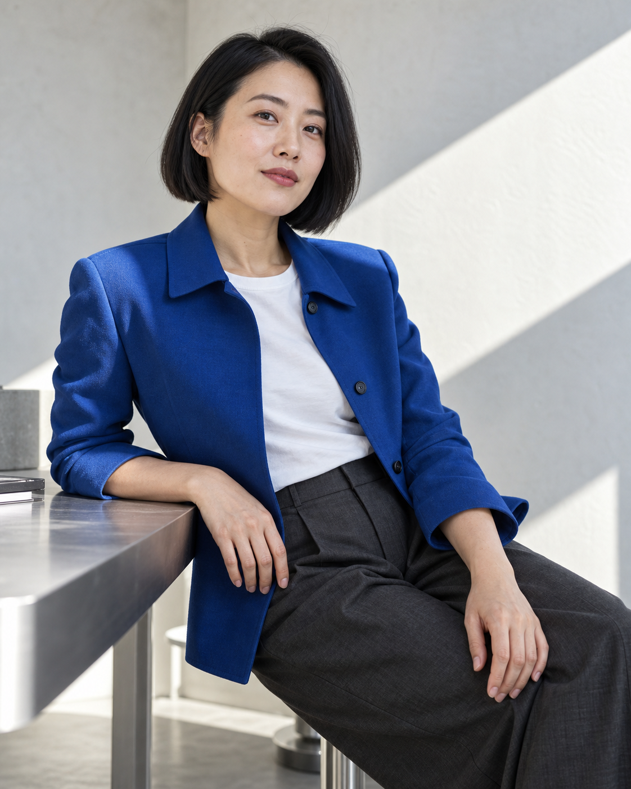
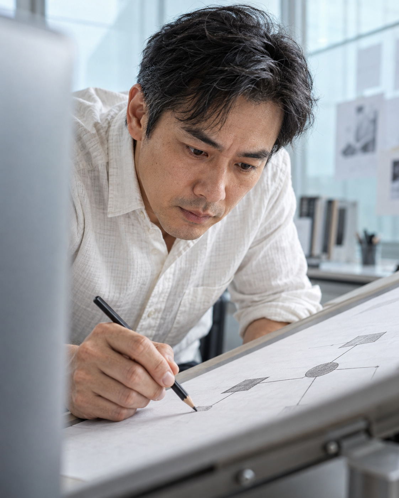

Independent editorial photo study
Exact CSS cover rendering. Research candidates only; no site adoption or user acceptance.
A · 313 × 400 · 55% 50%
A · 238 × 400 · 55% 50%
B · 313 × 400 · 45% 50%
B · 238 × 400 · 45% 50%
Previous four images at the same narrow display size
Read-only references from the existing D: output. Different casts and scenes; this is not a controlled causal A/B test.
Previous 01 · 238 × 400 Previous 02 · 238 × 400
Previous 02 · 238 × 400 Previous 03 · 238 × 400
Previous 03 · 238 × 400 Previous 04 · 238 × 400
Previous 04 · 238 × 400